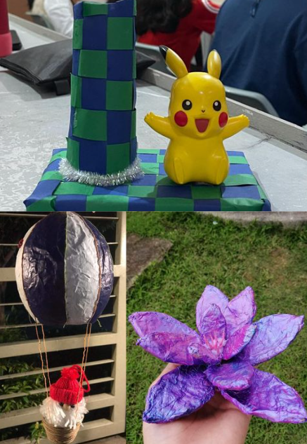

Music
Arts
For this category, we demonstrate the practices of time tables to better understand rhythm and harmony with our fellow classmates. As we begin this new objective. we will use wooden instruments to give appreciation to our topic in Music, Musikong Bumbong.
In this type of art, we make original works with only paper and other simple materials that you can find at home. Paper weaving involves easy ways to do and is very pretty when it is done. You can make paper weaving with simply interchanging the two slips of paper. We also demonstrate making paper mache, which is a craft that uses glue to harden the paper to make crafts out of it.
